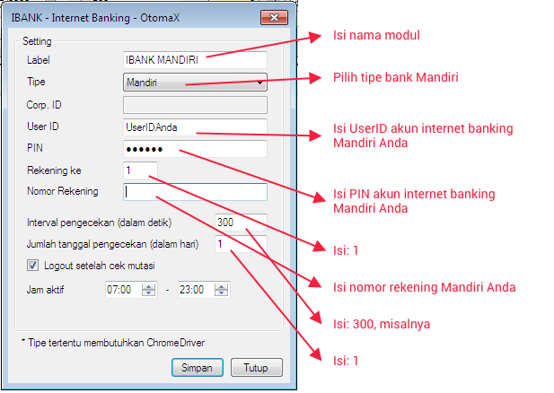

Mandiri
Modul Mandiri berguna untuk membaca mutasi di Mandiri Internet dan Mandiri Online sehingga deposit Reseller dapat masuk secara otomatis (tanpa campur tangan operator server) sesaat setelah Reseller melakukan transfer. Modul ini hanya tersedia di OtomaX edisi Standard, Pro, Advanced, Enterprise dan Ultimate klik disini. Apabila Anda belum mempunyai OtomaX klik disini; dan apabila sudah memiliki namun belum edisi tersebut untuk menikmatinya Anda harus melakukan Upgrade klik disini; dan apabila ingin membayar iuran tahunan OtomaX klik disini.
Sebelum mensetting modul internet banking Mandiri, pastikan:
- Telah menginstall Service Pack 1 (SP1) dan Internet Explorer versi 11 apabila menggunakan Windows 7 klik disini (download & install).
- Telah menginstall Transport Layer Security (TLS) v1.2 klik disini (download & install)..
- Telah menggunakan OtomaX versi 3.8.9 atau lebih tinggi.
Berikut ini langkah - langkah mensettingnya:
- Pastikan Anda sudah mempunyai akun Internet Banking Mandiri, kalau belum silahkan datang ke kantor Bank Mandiri terdekat dari tempat tinggal Anda.
- Pastikan Edisi OtomaX Anda Standard, Pro, Advanced, Enterprise atau Ultimate sebab modul ini hanya tersedia di edisi tersebut.
-
-
Untuk OtomaX v3.9.1 atau lebih rendah, pilih modul Mandiri -> klik kanan -> klik
Setting -> kemudian lakukan sesuai petunjuk di gambar di bawah ini:

-
Untuk OtomaX v4.0.0 atau lebih tinggi, pilih modul Internet Banking -> klik kanan -> klik
Tambah Internet Banking... -> kemudian lakukan sesuai petunjuk di gambar di bawah ini:

-
Untuk OtomaX v3.9.1 atau lebih rendah, pilih modul Mandiri -> klik kanan -> klik
Setting -> kemudian lakukan sesuai petunjuk di gambar di bawah ini:
- Selesai
Apabila akun internet banking Anda jenis Mandiri Online, silahkan klik disini.
Catatan: Di OtomaX edisi Standard dan Pro terdapat modul Internet Banking mulai versi 4.0.0.